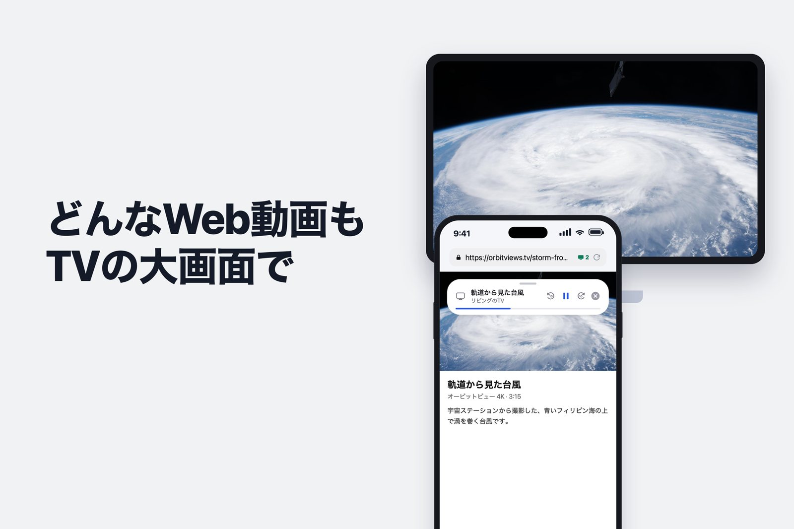
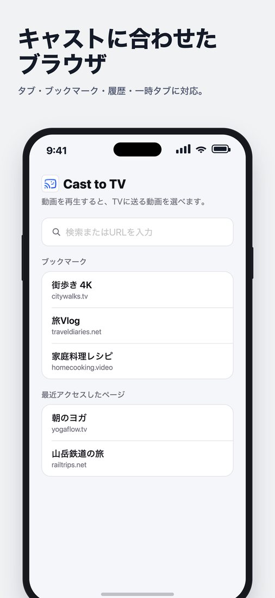
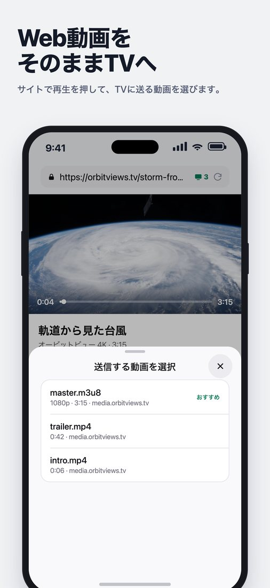
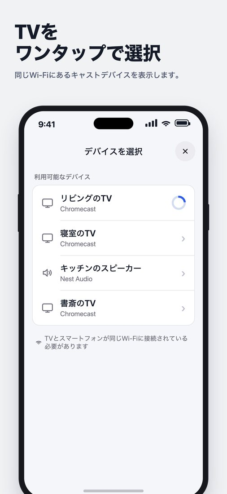
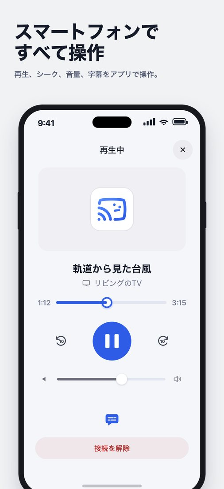
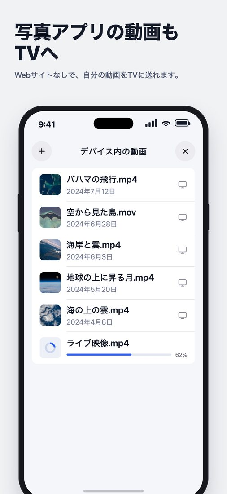

iPhone × Chromecast
Safariの動画を、
そのままテレビへ
iPhoneのSafariにはChromecastのボタンがありません。
アプリがひとつあれば解決します。 動画を開いて、再生して、テレビを選ぶだけ。

Cast to TVを無料でダウンロードたった3ステップ



ミラーリングではなく、テレビが元の画質のまま直接再生します。
その間、スマートフォンは自由に使えます。
こんなこともできます
- M3U8ライブ配信、MP4・WebM・MOV動画
- 字幕(WebVTT)の表示
- スマートフォンに保存した動画もテレビへ
- ロック画面から再生・一時停止・シーク
- ほかのアプリを使っていてもテレビで再生を継続
- アプリからテレビの音量を調整


無料で、更新も続けています
サブスクリプションは不要で、無料です(広告あり)。キャストの安定性や対応サイトを、アップデートのたびに改善しています。再生できないサイトがあれば、App Storeのレビューで教えてください。
💡 NetflixやYouTubeは?
各サービスの公式アプリにあるキャストボタンをお使いください。Cast to TVは、それ以外のWebサイトの動画向けです。
💡 テレビが表示されないときは?
同じWi-Fiに接続しているか確認 → iPhoneの設定 › プライバシーとセキュリティ › ローカルネットワークでアプリを許可 → VPNをオフ
Google CastおよびChromecastはGoogle LLCの商標であり、Cast to TVはGoogleとは提携していません。視聴する権利のあるコンテンツのみご利用ください。